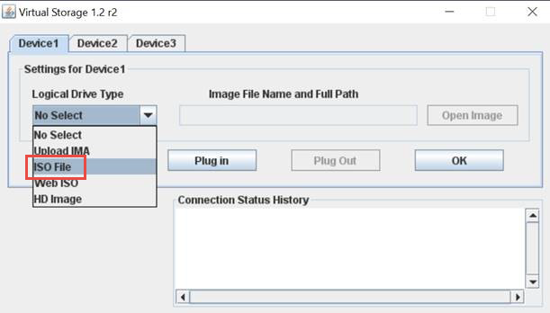
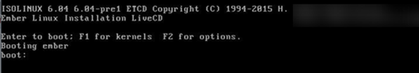
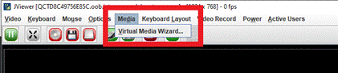
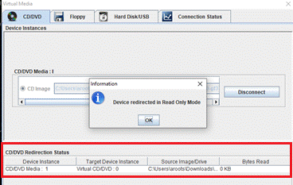
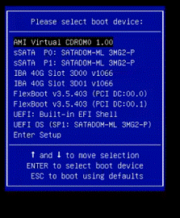

計算ノードのファームウェアをアップグレードする
寄稿者
 このページのPDFをダウンロード
このページのPDFをダウンロード
Hシリーズの計算ノードの場合、BMC、BIOS、NICなどのハードウェアコンポーネントのファームウェアをアップグレードできます。計算ノードのファームウェアをアップグレードするには、NetAppハイブリッドクラウドコントロールUI、REST API、最新のファームウェアイメージを備えたUSBドライブ、またはBMCUIを使用できます。
アップグレード後、計算ノードはESXiで起動し、構成を保持したまま以前と同じように機能します。
計算ドライバー：計算ノードドライバーをアップグレードしました。計算ノードドライバーが新しいファームウェアと互換性がない場合、アップグレードは開始されません。ドライバーとファームウェアの互換性情報については、相互運用性マトリックスツール（IMT）を参照してください。また、最新の最新のファームウェアとドライバーの詳細については、最新の計算ノードファームウェアリリースノートを確認してください。
管理者権限：アップグレードを実行するためのクラスター管理者およびBMC管理者の権限があります。
システムポート：アップグレードにNetApp Hybrid Cloud Controlを使用している場合は、必要なポートが開いていることを確認しました。詳細については、ネットワークポートを参照してください。
-
BMCおよびBIOSの最小バージョン：NetApp Hybrid Cloud Controlを使用してアップグレードする予定のノードは、次の最小要件を満たしています。
モデル 最小BMCバージョン BIOSの最小バージョン H300E、H500E、H700E
6.84.00
NA2.1
H410C
サポートされているすべてのバージョン（アップグレードは不要）
サポートされているすべてのバージョン（アップグレードは不要）
H610C
3.96.07
3B01
H615C
4.68.07
3B08.CO
H615C計算ノードは、計算ファームウェアバンドル2.27を使用してBMCファームウェアをバージョン4.68に更新し、NetApp Hybrid CloudControlが将来のファームウェアアップグレードを実行できるようにする必要があります。 NetApp Hybrid Cloud Controlが将来のファームウェアアップグレードを実行できるようにするには、H300E、H500E、およびH700EコンピューティングノードにRedfishライセンスが必要です。ネットアップサポートに連絡して、新しいコンピューティングファームウェアバンドルが後続のリリースでこのプロセスを自動化するまで、ライセンスを手動でインストールしてください。 BIOSの起動順序：各ノードのBIOSセットアップで起動順序を手動で変更して、
USB CD/DVDが起動リストに表示されるようにします。詳細については、この記事を参照してください。BMC資格情報：NetApp Hybrid CloudControlが計算ノードBMCへの接続に使用する資格情報を更新します。これは、NetApp Hybrid Cloud ControlUIまたはAPIのいずれかを使用して実行できます。アップグレード前にBMC情報を更新すると、インベントリが更新され、管理ノードサービスがアップグレードを完了するために必要なすべてのハードウェアパラメータを認識できるようになります。
接続されたメディア：計算ノードのアップグレードを開始する前に、物理USBまたはISOを切断します。
KVM ESXiコンソール：計算ノードのアップグレードを開始する前に、BMC UIで開いているすべてのSerial-Over-LAN（SOL）セッションとアクティブなKVMセッションを閉じます。
ウィットネスノードの要件：2ノードおよび3ノードのストレージクラスターでは、NetAppHCIインストールで常に1つのウィットネスノードが実行されている必要があります。
計算ノードのヘルスチェック：ノードをアップグレードする準備ができていることを確認しました。コンピューティングファームウェアをアップグレードする前に、コンピュートノードのヘルスチェックを実行するを参照してください。
実稼働環境では、一度に1つの計算ノードのファームウェアをアップグレードします。
NetApp Hybrid Cloud Control UIまたはAPIアップグレードの場合、DRS機能と必要なライセンスがある場合、ESXiホストはアップグレードプロセス中に自動的にメンテナンスモードになります。ノードが再起動され、アップグレードプロセスが完了すると、ESXiホストはメンテナンスモードから解除されます。 USBおよびBMCUIオプションの場合、各手順で説明されているように、ESXiホストを手動でメンテナンスモードにする必要があります。
アップグレードシナリオに関連するオプションを選択します。
NetApp Hybrid Cloud Control UIを使用してコンピューティングノードをアップグレードする（推奨）
計算ノードイメージ12.0の場合：最新の計算ノードファームウェアISOがダウンロードされたUSBドライブを使用します
コンピューティングファームウェア12.2.109の場合：Baseboard Management Controller（BMC）ユーザーインターフェイス（UI）を使用します
NetApp Hybrid Cloud ControlUIを使用してコンピューティングノードをアップグレードする
管理サービス2.14以降、NetAppハイブリッドクラウドコントロールUIを使用してコンピューティングノードをアップグレードできます。ノードのリストから、アップグレードするノードを選択する必要があります。 [現在のバージョン]タブには現在のファームウェアバージョンが表示され、[提案されたバージョン]タブには利用可能なアップグレードバージョンが表示されます（存在する場合）。
| アップグレードを成功させるには、vSphereクラスターのヘルスチェックが成功していることを確認してください。 |
| ダークサイトのアップグレードでは、アップグレードパッケージと管理ノードの両方がローカルである場合、アップロード時間を短縮できます。 |
| NIC、BIOS、およびBMCのアップグレードには、管理ノードとBMCホスト間のネットワーク接続の速度に応じて、ノードごとに約60分かかる場合があります。 |
-
管理ノードがインターネットに接続されていない場合は、 ネットアップサポートサイトからコンピュートノードファームウェアパッケージをダウンロードしています。
TAR.GZファイルをTARファイルに抽出してから、TARファイルをISOに抽出する必要があります。
-
Webブラウザーを開き、管理ノードのIPアドレスを参照します。
https：// <ManagementNodeIP>
ストレージクラスター管理者の資格情報を入力して、NetApp Hybrid CloudControlにログインします。
インターフェイスの右上にある[アップグレード]をクリックします。
[アップグレード]ページで、[ファームウェアの計算]を選択します。
-
次のオプションから選択し、クラスターに適用可能な一連の手順を実行します。
オプション ステップ 管理ノードには外部接続があります。
-
アップグレードするクラスターを選択します。
アップグレードが可能な場合は、クラスター内のノードが、現在のファームウェアバージョンおよび新しいバージョンとともに一覧表示されます。
アップグレードパッケージを選択します。
-
[アップグレードの開始]をクリックします。
[アップグレードの開始]をクリックすると、ウィンドウにヘルスチェックの失敗が表示されます（存在する場合）。
開始後にアップグレードを一時停止することはできません。ファームウェアは、NIC、BIOS、BMCの順に更新されます。アップグレード中はBMCUIにログインしないでください。 BMCにログインすると、アップグレードプロセスを監視するHybrid Cloud Control Serial-Over-LAN（SOL）セッションが終了します。 クラスターまたはノードレベルでのヘルスチェックが警告付きで合格したが、重大な障害が発生しなかった場合は、アップグレードの準備ができていると表示されます。 [ノードのアップグレード]をクリックします。
アップグレードの進行中は、ページを離れて後でページに戻り、進行状況の監視を続けることができます。アップグレード中、UIにはアップグレードのステータスに関するさまざまなメッセージが表示されます。 H610C計算ノードのファームウェアをアップグレードしている間は、BMC Web UIからSerial-Over-LAN（SOL）コンソールを開かないでください。これにより、アップグレードが失敗する可能性があります。 アップグレードが完了すると、UIにメッセージが表示されます。アップグレードの完了後にログをダウンロードできます。
管理ノードは、外部接続のない暗いサイト内にあります。
アップグレードするクラスターを選択します。
[参照]をクリックして、からダウンロードしたアップグレードパッケージをアップロードします。
NetAppサポートサイト。アップロードが完了するのを待ちます。プログレスバーにアップロードのステータスが表示されます。
ブラウザウィンドウから移動すると、ファイルのアップロードはバックグラウンドで行われます。 ファイルが正常にアップロードおよび検証されると、画面上のメッセージが表示されます。検証には数分かかる場合があります。
アップグレードの完了後にログをダウンロードできます。さまざまなアップグレードのステータスの変更に関する情報は、以下を参照してくださいアップグレードのステータスの変更を。 -
| アップグレード中に障害が発生した場合、NetApp Hybrid Cloud Controlはノードを再起動し、メンテナンスモードを解除して、エラーログへのリンクとともに障害ステータスを表示します。特定の手順またはKB記事へのリンクを含むエラーログをダウンロードして、問題を診断および修正できます。 NetApp Hybrid Cloud Controlを使用したコンピューティングノードファームウェアのアップグレードの問題に関する追加の洞察については、このKB記事を参照してください。 |
アップグレードステータスの変更
アップグレードプロセスの前、最中、後にUIに表示されるさまざまな状態は次のとおりです。
| アップグレード状態 | 説明 |
|---|---|
ノードが1つ以上のヘルスチェックに失敗しました。詳細を表示するには展開します。 |
1つ以上のヘルスチェックが失敗しました。 |
エラー |
アップグレード中にエラーが発生しました。エラーログをダウンロードして、ネットアップサポートに送信できます。 |
検出できません |
NetApp Hybrid Cloud Controlには、オンラインソフトウェアリポジトリにアクセスするための外部接続がありません。このステータスは、計算ノードアセットにハードウェアタグがない場合にNetApp Hybrid CloudControlが計算ノードにクエリを実行できない場合にも表示されます。 |
アップグレードする準備ができました。 |
すべてのヘルスチェックに合格し、ノードをアップグレードする準備が整いました。 |
アップグレード中にエラーが発生しました。 |
重大なエラーが発生すると、この通知でアップグレードが失敗します。 [ログのダウンロード]リンクをクリックしてログをダウンロードし、エラーの解決に役立ててください。エラーを解決した後、アップグレードを再試行できます。 |
ノードのアップグレードが進行中です。 |
アップグレードが進行中です。プログレスバーにアップグレードステータスが表示されます。 |
NetApp Hybrid Cloud ControlAPIを使用してコンピューティングノードをアップグレードする
APIを使用して、クラスター内の各計算ノードを最新のファームウェアバージョンにアップグレードできます。選択した自動化ツールを使用して、APIを実行できます。ここで説明するAPIワークフローでは、例として管理ノードで使用可能なREST APIUIを使用しています。
vCenterおよびハードウェア資産を含む計算ノード資産は、管理ノード資産に認識されている必要があります。インベントリサービスAPIを使用して、アセットを検証できます（ https://[management node IP]/inventory/1/ ）。
-
接続に応じて、次のいずれかを実行します。
オプション ステップ 管理ノードには外部接続があります。
-
リポジトリ接続を確認します。
-
管理ノードでパッケージサービスRESTAPIUIを開きます。
https：// [管理ノードIP] / package-repository / 1 /
-
[承認]をクリックして、以下を完了します。
クラスターのユーザー名とパスワードを入力します。
クライアントIDを
mnode-clientとして入力します。[承認]をクリックしてセッションを開始します。
承認ウィンドウを閉じます。
REST API UIから、[ GET / packages / remote-repository / connection ]をクリックします。
[試してみる]をクリックします。
[実行]をクリックします。
コード200が返された場合は、次の手順に進みます。リモートリポジトリへの接続がない場合は、接続を確立するか、ダークサイトオプションを使用します。
-
-
アップグレードパッケージIDを見つけます。
REST API UIから、[ GET / packages ]をクリックします。
[試してみる]をクリックします。
[実行]をクリックします。
応答から、後のステップで使用するために、アップグレードパッケージ名（
"packageName"）とパッケージバージョン（"packageVersion"）をコピーして保存します。
管理ノードは、外部接続のない暗いサイト内にあります。
-
NetApp HCIソフトウェアのダウンロードページに移動し、管理ノードがアクセスできるデバイスに最新の計算ノードファームウェアイメージをダウンロードします。
ダークサイトのアップグレードでは、アップグレードパッケージと管理ノードの両方がローカルである場合、アップロード時間を短縮できます。 -
コンピューティングファームウェアアップグレードパッケージを管理ノードにアップロードします。
-
管理ノードで管理ノードRESTAPIUIを開きます。
https：// [管理ノードIP] / package-repository / 1 /
-
[承認]をクリックして、以下を完了します。
クラスターのユーザー名とパスワードを入力します。
クライアントIDを
mnode-clientとして入力します。[承認]をクリックしてセッションを開始します。
承認ウィンドウを閉じます。
REST API UIから、[ POST / packages ]をクリックします。
[試してみる]をクリックします。
[参照]をクリックして、アップグレードパッケージを選択します。
[実行]をクリックしてアップロードを開始します。
応答から、後のステップで使用するためにパッケージID（
"id"）をコピーして保存します。
-
-
アップロードのステータスを確認します。
REST API UIから、 GET / packages / {id} / statusをクリックします。
[試してみる]をクリックします。
前の手順でコピーしたパッケージIDをidに入力します。
-
[実行]をクリックして、ステータス要求を開始します。
応答は、完了時に
stateをSUCCESSとして示します。 応答から、後のステップで使用するために、アップグレードパッケージ名（
"name"）とパッケージバージョン（"version"）をコピーして保存します。
-
-
アップグレードするノードの計算コントローラーIDとノードハードウェアIDを見つけます。
-
管理ノードでインベントリサービスRESTAPIUIを開きます。
https：// [管理ノードIP] / Inventory / 1 /
-
[承認]をクリックして、以下を完了します。
クラスターのユーザー名とパスワードを入力します。
クライアントIDを
mnode-clientとして入力します。[承認]をクリックしてセッションを開始します。
承認ウィンドウを閉じます。
REST API UIから、[ GET / installations ]をクリックします。
[試してみる]をクリックします。
[実行]をクリックします。
応答から、インストール資産ID（
"id"）をコピーします。REST API UIから、[ GET / settings / {id} ]をクリックします。
[試してみる]をクリックします。
インストール資産IDをidフィールドに貼り付けます。
[実行]をクリックします。
-
応答から、クラスターコントローラーID（
"controllerId"）とノードハードウェアID（"hardwareId"）をコピーして保存し、後の手順で使用できるようにします。「計算」：{ 「エラー」：[]、 「在庫」：{ 「クラスター」：[ {{ "clusterId"： "Test-1B"、 "controllerId"： "a1b23456-c1d2-11e1-1234-a12bcdef123a"、「ノード」：[ {{ "bmcDetails"：{ "bmcAddress"： "10.111.0.111"、 "credentialsAvailable"：true、 "credentialsValidated"：true }、 "chassisSerialNumber"： "111930011231"、 "chassisSlot"： "D"、 "hardwareId"： "123a4567-01b1-1243-a12b-11ab11ab0a15"、 "hardwareTag"： "00000000-0000-0000-0000-ab1c2de34f5g"、 "id"： "e1111d10-1a1a-12d7-1a23-ab1cde23456f"、 「モデル」：「H410C」、
-
-
計算ノードのファームウェアアップグレードを実行します。
-
管理ノードでハードウェアサービスRESTAPIUIを開きます。
https：// [管理ノードIP] / hardware / 2 /
-
[承認]をクリックして、以下を完了します。
クラスターのユーザー名とパスワードを入力します。
クライアントIDを
mnode-clientとして入力します。[承認]をクリックしてセッションを開始します。
承認ウィンドウを閉じます。
POST / nodes / {hardware_id} / upgradesをクリックします。
[試してみる]をクリックします。
パラメータフィールドにハードウェアホストアセットID（前の手順で保存した
"hardwareId"）を入力します。-
ペイロード値を使用して以下を実行します。
値
"force": falseおよび"maintenanceMode": true"して、ノードでヘルスチェックが実行され、ESXiホストがメンテナンスモードに設定されるようにします。クラスターコントローラーID（前の手順で保存した
"controllerId"入力します。-
前の手順で保存したパッケージ名とパッケージバージョンを入力します。
{{ "config"：{ 「力」：偽、 "maintenanceMode"：true }、 "controllerId"： "a1b23456-c1d2-11e1-1234-a12bcdef123a"、 "packageName"： "compute-firmware-12.2.109"、 "packageVersion"： "12.2.109" }
-
[実行]をクリックしてアップグレードを開始します。
開始後にアップグレードを一時停止することはできません。ファームウェアは、NIC、BIOS、BMCの順に更新されます。アップグレード中はBMCUIにログインしないでください。 BMCにログインすると、アップグレードプロセスを監視するHybrid Cloud Control Serial-Over-LAN（SOL）セッションが終了します。 応答のリソースリンク（
"resourceLink"）URLの一部であるアップグレードタスクIDをコピーします。
-
-
アップグレードの進行状況と結果を確認します。
GET / task / {task_id} / logsをクリックします。
[試してみる]をクリックします。
前のステップのタスクIDをtask_Idに入力します。
[実行]をクリックします。
-
アップグレード中に問題または特別な要件がある場合は、次のいずれかを実行します。
オプション ステップ 応答本文の
failedHealthChecksメッセージによるクラスターヘルスの問題を修正する必要があります。各問題にリストされている特定のKB記事に移動するか、指定された救済策を実行してください。
KBが指定されている場合は、関連するKBの記事に記載されているプロセスを完了してください。
クラスタの問題を解決したら、必要に応じて再認証し、 POST / nodes / {hardware_id} / upgradesをクリックします。
アップグレード手順で前述した手順を繰り返します。
アップグレードは失敗し、緩和手順はアップグレードログにリストされません。
このKB記事を参照してください（ログインが必要です）。
-
プロセスが完了するまで、必要に応じてGET / task / {task_id} / logsAPIを複数回実行します。
アップグレード中、エラーが発生しなかった場合、
statusはrunning中status示します。各ステップが終了すると、status値がcompleted変わります。各ステップのステータスが
completedし、percentageCompletedcompleted値が100場合、アップグレードは正常に終了しています。
-
（オプション）各コンポーネントのアップグレードされたファームウェアバージョンを確認します。
-
管理ノードでハードウェアサービスRESTAPIUIを開きます。
https：// [管理ノードIP] / hardware / 2 /
-
[承認]をクリックして、以下を完了します。
クラスターのユーザー名とパスワードを入力します。
クライアントIDを
mnode-clientとして入力します。[承認]をクリックしてセッションを開始します。
承認ウィンドウを閉じます。
REST API UIから、 GET / nodes / {hardware_id} / upgradesをクリックします。
（オプション）日付とステータスのパラメータを入力して、結果をフィルタリングします。
パラメータフィールドにハードウェアホストアセットID（前の手順で保存した
"hardwareId"）を入力します。[試してみる]をクリックします。
[実行]をクリックします。
応答で、すべてのコンポーネントのファームウェアが以前のバージョンから最新のファームウェアに正常にアップグレードされたことを確認します。
-
最新の計算ノードファームウェアISOがダウンロードされたUSBドライブを使用する
コンピュートノードのUSBポートにダウンロードされた最新のコンピュートノードファームウェアISOを備えたUSBドライブを挿入できます。この手順で説明するUSBサムドライブ方式を使用する代わりに、ベースボード管理コントローラー（BMC）インターフェイスの仮想コンソールで[仮想CD / DVD ]オプションを使用してISOを計算ノードにマウントできます。 BMC方式は、USBサムドライブ方式よりもかなり時間がかかります。ワークステーションまたはサーバーに必要なネットワーク帯域幅があり、BMCとのブラウザセッションがタイムアウトしないことを確認してください。
NetAppソフトウェアのダウンロードページを参照し、[ NetApp HCI ]をクリックして、ダウンロードリンクをクリックしてNetAppHCIの正しいバージョンを確認します。
エンドユーザー使用許諾契約に同意します。
[コンピューティングノード]セクションで、[コンピューティングノード]イメージをダウンロードします。
Etcherユーティリティを使用して、計算ノードファームウェアISOをUSBドライブにフラッシュします。
-
VMware vCenterを使用して計算ノードをメンテナンスモードにし、すべての仮想マシンをホストから退避させます。
クラスターでVMwareDistributed Resource Scheduler（DRS）が有効になっている場合（これはNetApp HCIインストールのデフォルトです）、仮想マシンはクラスター内の他のノードに自動的に移行されます。 USBサムドライブを計算ノードのUSBポートに挿入し、VMwarevCenterを使用して計算ノードを再起動します。
計算ノードのPOSTサイクル中に、 F11を押してブートマネージャーを開きます。 F11をすばやく連続して複数回押す必要がある場合があります。この操作は、ビデオ/キーボードを接続するか、
BMCのコンソールを使用して実行できます。表示されるメニューから[ワンショット] > [ USBフラッシュドライブ]を選択します。 USBサムドライブがメニューに表示されない場合は、USBフラッシュドライブがシステムのBIOSのレガシーブート順序の一部であることを確認してください。
-
Enterキーを押して、USBサムドライブからシステムを起動します。ファームウェアのフラッシュプロセスが開始されます。
ファームウェアのフラッシュが完了してノードが再起動した後、ESXiが起動するまでに数分かかる場合があります。
再起動が完了したら、vCenterを使用してアップグレードされた計算ノードのメンテナンスモードを終了します。
アップグレードされた計算ノードからUSBフラッシュドライブを取り外します。
すべての計算ノードがアップグレードされるまで、ESXiクラスター内の他の計算ノードに対してこのタスクを繰り返します。
Baseboard Management Controller（BMC）ユーザーインターフェイス（UI）を使用する
アップグレードが成功することを確認するには、一連の手順を実行して計算ノードファームウェアISOをロードし、ノードをISOで再起動する必要があります。 ISOは、Webブラウザをホストしているシステムまたは仮想マシン（VM）に配置する必要があります。プロセスを開始する前に、ISOをダウンロードしたことを確認してください。
| システムまたはVMとノードを同じネットワーク上に配置することをお勧めします。 |
| BMC UIを介したアップグレードには、約25〜30分かかります。 |
H410CおよびH300E / H500E / H700Eノードのファームウェアをアップグレードします
ノードがクラスターの一部である場合は、アップグレード前にノードをメンテナンスモードにし、アップグレード後にメンテナンスモードを解除する必要があります。
プロセス中に表示される次の情報メッセージは無視してください。 Untrusty Debug Firmware Key is used, SecureFlash is currently in Debug Mode
|
-
ノードがクラスターの一部である場合は、次のようにメンテナンスモードにします。そうでない場合は、手順2に進みます。
VMware vCenterWebクライアントにログインします。
ホスト（計算ノード）名を右クリックし、[メンテナンスモード]> [メンテナンスモードに入る]を選択します。
-
[ OK]をクリックします。
ホスト上のVMは、使用可能な別のホストに移行されます。移行する必要のあるVMの数によっては、VMの移行に時間がかかる場合があります。続行する前に、ホスト上のすべてのVMが移行されていることを確認してください。
BMC UI（
https://BMCIP/#login）に移動しhttps://BMCIP/#login。ここで、BMCIPはBMCのIPアドレスです。資格情報を使用してログインします。
[リモートコントロール]> [コンソールリダイレクト]を選択します。
-
[コンソールの起動]をクリックします。
Javaをインストールするか、更新する必要がある場合があります。 コンソールが開いたら、[仮想メディア] > [仮想ストレージ]をクリックします。
-
[仮想ストレージ]画面で、[論理ドライブの種類]をクリックし、[ ISOファイル]を選択します。

[イメージを開く]をクリックして、ISOファイルをダウンロードしたフォルダーを参照し、ISOファイルを選択します。
[プラグイン]をクリックします。
接続状態が
Device#: VM Plug-in OK!!、[ OK ]をクリックします。F12を押して[再起動]をクリックするか、[電源制御]> [電源リセットの設定]をクリックして、ノードを再起動します。
-
再起動中にF11を押して起動オプションを選択し、ISOをロードします。ブートメニューが表示される前に、F11を数回押す必要がある場合があります。
次の画面が表示されます。

-
上記の画面で、 Enterキーを押します。ネットワークによっては、 Enterキーを押してからアップグレードを開始するまでに数分かかる場合があります。
注：ファームウェアのアップグレードによっては、コンソールが切断されたり、BMCのセッションが切断されたりする場合があります。 BMCに再度ログインすることはできますが、ファームウェアのアップグレードにより、コンソールなどの一部のサービスが利用できない場合があります。アップグレードが完了すると、ノードはコールドリブートを実行します。これには約5分かかる場合があります。 -
BMC UIに再度ログインし、[システム]をクリックして、OSの起動後にBIOSバージョンとビルド時間を確認します。アップグレードが正しく完了すると、新しいBIOSとBMCのバージョンが表示されます。
BIOSバージョンは、ノードが完全に起動するまで、アップグレードされたバージョンを表示しません。 -
ノードがクラスターの一部である場合は、以下の手順を実行します。スタンドアロンノードの場合、それ以上のアクションは必要ありません。
VMware vCenterWebクライアントにログインします。
ホストをメンテナンスモードから解除します。これにより、切断された赤いフラグが表示される場合があります。すべてのステータスがクリアされるまで待ちます。
電源がオフになっていた残りのVMのいずれかをオンにします。
H610C / H615Cノードのファームウェアをアップグレードします
手順は、ノードがスタンドアロンであるかクラスターの一部であるかによって異なります。手順には約25分かかる場合があり、ノードの電源をオフにし、ISOをアップロードし、デバイスをフラッシュし、アップグレード後にノードの電源を再びオンにします。
-
ノードがクラスターの一部である場合は、次のようにメンテナンスモードにします。そうでない場合は、手順2に進みます。
VMware vCenterWebクライアントにログインします。
ホスト（計算ノード）名を右クリックし、[メンテナンスモード]> [メンテナンスモードに入る]を選択します。
-
[ OK]をクリックします。
ホスト上のVMは、使用可能な別のホストに移行されます。移行する必要のあるVMの数によっては、VMの移行に時間がかかる場合があります。続行する前に、ホスト上のすべてのVMが移行されていることを確認してください。
BMC UI（
https://BMCIP/#login）に移動しhttps://BMCIP/#login。ここで、https://BMCIP/#loginはBMCのIPアドレスです。資格情報を使用してログインします。
[リモートコントロール]> [ KVM（Java）の起動]をクリックします。
-
コンソールウィンドウで、[メディア] > [仮想メディアウィザード]をクリックします。
 [参照]をクリックして、コンピューティングファームウェアの
.isoファイルを選択します。-
[接続]をクリックします。
成功を示すポップアップが表示され、パスとデバイスが下部に表示されます。 [仮想メディア]ウィンドウを閉じることができます。 F12を押して[再起動]をクリックするか、[電源制御]> [電源リセットの設定]をクリックして、ノードを再起動します。
再起動中にF11を押して起動オプションを選択し、ISOをロードします。
-
表示されたリストからAMIVirtual CDROMを選択し、 Enterをクリックします。リストにAMI仮想CDROMが表示されない場合は、BIOSに移動し、ブートリストで有効にします。保存後、ノードは再起動します。再起動中にF11を押します。
 -
表示された画面で、 Enterをクリックします。
一部のファームウェアアップグレードにより、コンソールが切断されたり、BMCのセッションが切断されたりする場合があります。 BMCに再度ログインすることはできますが、ファームウェアのアップグレードにより、コンソールなどの一部のサービスが利用できない場合があります。アップグレードが完了すると、ノードはコールドリブートを実行します。これには約5分かかる場合があります。 -
コンソールから切断された場合は、[リモートコントロール]を選択し、[ KVMの起動]または[ KVMの起動（Java） ]をクリックして再接続し、ノードの起動が完了したことを確認します。ノードが正常に起動したことを確認するために、複数の再接続が必要になる場合があります。
電源投入プロセス中、約5分間、KVMコンソールに信号が表示されません。 ノードの電源がオンになったら、[ダッシュボード]> [デバイス情報]> [詳細情報]を選択して、BIOSとBMCのバージョンを確認します。アップグレードされたBIOSおよびBMCバージョンが表示されます。アップグレードされたバージョンのBIOSは、ノードが完全に起動するまで表示されません。
ノードをメンテナンスモードにした場合は、ノードがESXiで起動した後、ホスト（コンピューターノード）名を右クリックし、[メンテナンスモード]> [メンテナンスモードの終了]を選択して、VMをホストに移行します。
vCenterで、ホスト名を選択して、BIOSバージョンを構成および確認します。
 Edit on GitHub
Edit on GitHub